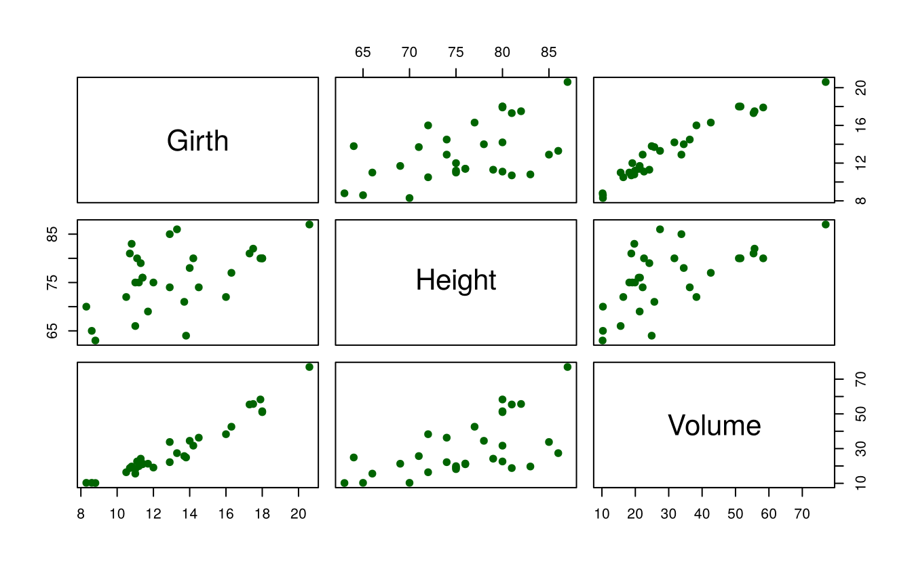
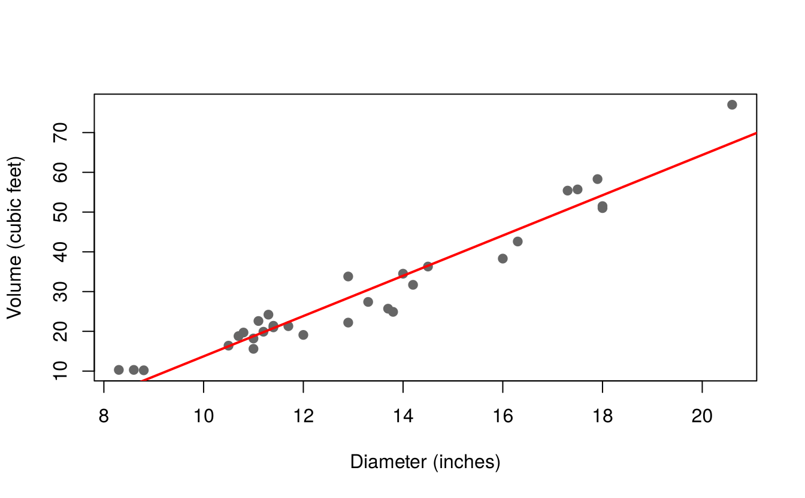
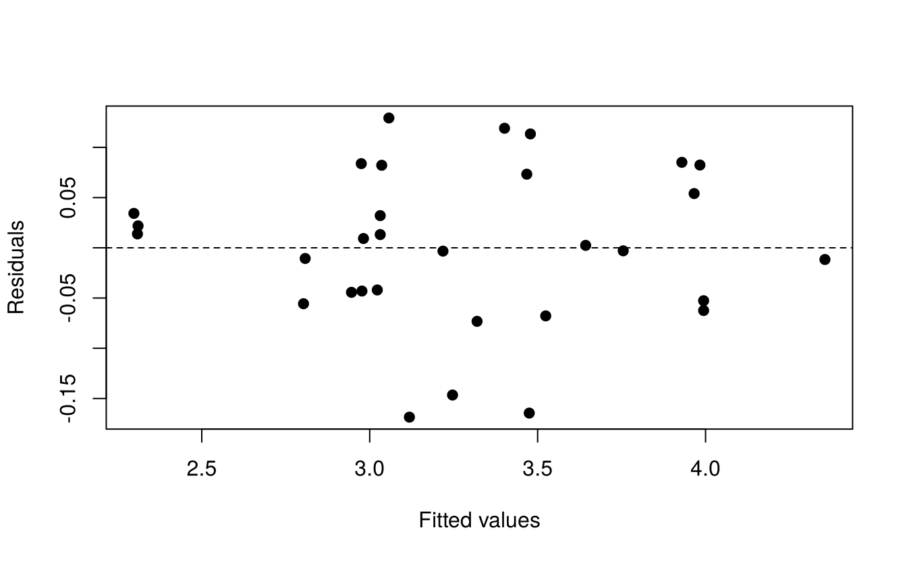

18 Correlation and regression
Correlation measures the strength of the linear association between two variables, treating them symmetrically. Regression describes how one variable (the response, \(y\)) depends on one or more others (the predictors, \(x\)), and is used for prediction.
We use the built-in trees data: the diameter (labelled Girth, in inches, measured at 4 ft 6 in above the ground), height (ft) and timber volume (cubic ft) of 31 felled black cherry trees. Estimating the volume of a standing tree from easily measured diameter and height is a classic problem in forestry.
str(trees)#> 'data.frame': 31 obs. of 3 variables:
#> $ Girth : num 8.3 8.6 8.8 10.5 10.7 10.8 11 11 11.1 11.2 ...
#> $ Height: num 70 65 63 72 81 83 66 75 80 75 ...
#> $ Volume: num 10.3 10.3 10.2 16.4 18.8 19.7 15.6 18.2 22.6 19.9 ...
pairs(trees, pch = 19, col = "darkgreen")
18.1 Correlation
18.1.1 Pearson’s correlation coefficient
\[r = \frac{\sum (x_i - \bar x)(y_i - \bar y)}{\sqrt{\sum (x_i - \bar x)^2 \sum (y_i - \bar y)^2}}, \qquad -1 \le r \le 1\]
cor(trees)#> Girth Height Volume
#> Girth 1.0000 0.5193 0.9671
#> Height 0.5193 1.0000 0.5982
#> Volume 0.9671 0.5982 1.000018.1.2 Testing the significance of a correlation
To test \(H_0: \rho = 0\),
\[t = \frac{r\sqrt{n-2}}{\sqrt{1 - r^2}}\]
with \(n - 2\) df. cor.test() performs the test and gives a confidence interval for \(\rho\) (based on Fisher’s \(z\) transformation):
cor.test(~ Girth + Volume, data = trees)#>
#> Pearson's product-moment correlation
#>
#> data: Girth and Volume
#> t = 20, df = 29, p-value <2e-16
#> alternative hypothesis: true correlation is not equal to 0
#> 95 percent confidence interval:
#> 0.9323 0.9842
#> sample estimates:
#> cor
#> 0.9671Diameter and volume are very strongly and significantly correlated (\(r = 0.97\), \(p < 0.001\)).
18.1.3 Rank correlation
Spearman’s rank correlation (\(\rho_s\)) and Kendall’s \(\tau\) measure monotone (not necessarily linear) association and do not assume normality:
cor.test(~ Height + Volume, data = trees, method = "spearman", exact = FALSE)#>
#> Spearman's rank correlation rho
#>
#> data: Height and Volume
#> S = 2090, p-value = 0.0006
#> alternative hypothesis: true rho is not equal to 0
#> sample estimates:
#> rho
#> 0.5787
cor(trees, method = "kendall")#> Girth Height Volume
#> Girth 1.0000 0.3169 0.8303
#> Height 0.3169 1.0000 0.4496
#> Volume 0.8303 0.4496 1.000018.1.4 Partial correlation
The partial correlation between \(x_1\) and \(x_2\) given \(x_3\) measures their association after removing the linear effect of \(x_3\) from both:
\[r_{12.3} = \frac{r_{12} - r_{13}r_{23}}{\sqrt{(1 - r_{13}^2)(1 - r_{23}^2)}}\]
r <- cor(trees)
r12 <- r["Height", "Volume"]; r13 <- r["Height", "Girth"]; r23 <- r["Volume", "Girth"]
(r12 - r13 * r23) / sqrt((1 - r13^2) * (1 - r23^2))#> [1] 0.4419#> partial correlations
#> Height Volume
#> Height 1.00 0.44
#> Volume 0.44 1.00The simple correlation between height and volume is 0.60, but once diameter is held constant it falls to 0.44: part of the association between height and volume arises because taller trees also tend to be thicker.
Correlation does not imply causation, and a correlation coefficient describes only linear association. Always look at the scatter plot: two variables with a strong curved relationship can have \(r\) close to zero.
18.2 Simple linear regression
18.2.1 Model
\[y_i = \beta_0 + \beta_1 x_i + e_i, \qquad e_i \sim N(0, \sigma^2)\]
The least-squares estimates are
\[\hat\beta_1 = \frac{\sum (x_i - \bar x)(y_i - \bar y)}{\sum (x_i - \bar x)^2}, \qquad \hat\beta_0 = \bar y - \hat\beta_1 \bar x\]
18.2.2 Fitting with lm()
#>
#> Call:
#> lm(formula = Volume ~ Girth, data = trees)
#>
#> Residuals:
#> Min 1Q Median 3Q Max
#> -8.065 -3.107 0.152 3.495 9.587
#>
#> Coefficients:
#> Estimate Std. Error t value Pr(>|t|)
#> (Intercept) -36.943 3.365 -11.0 7.6e-12 ***
#> Girth 5.066 0.247 20.5 < 2e-16 ***
#> ---
#> Signif. codes: 0 '***' 0.001 '**' 0.01 '*' 0.05 '.' 0.1 ' ' 1
#>
#> Residual standard error: 4.25 on 29 degrees of freedom
#> Multiple R-squared: 0.935, Adjusted R-squared: 0.933
#> F-statistic: 419 on 1 and 29 DF, p-value: <2e-16Reading the output:
-
Coefficients: the fitted line is Volume = −36.94 + 5.07 × Diameter. Each additional inch of diameter adds about 5.07 cubic feet of volume. The t test for
Girthtests \(H_0: \beta_1 = 0\). - Residual standard error: \(\hat\sigma\) = 4.25 cubic feet.
- Multiple R-squared (coefficient of determination): 93.5% of the variation in volume is explained by diameter. In simple regression \(R^2 = r^2\).
- F-statistic: tests the whole regression; here equal to \(t^2\).
anova(fit1)#> Analysis of Variance Table
#>
#> Response: Volume
#> Df Sum Sq Mean Sq F value Pr(>F)
#> Girth 1 7582 7582 419 <2e-16 ***
#> Residuals 29 524 18
#> ---
#> Signif. codes: 0 '***' 0.001 '**' 0.01 '*' 0.05 '.' 0.1 ' ' 1
confint(fit1) # 95% confidence intervals for the coefficients#> 2.5 % 97.5 %
#> (Intercept) -43.83 -30.061
#> Girth 4.56 5.572
plot(Volume ~ Girth, data = trees, pch = 19, col = "grey40",
xlab = "Diameter (inches)", ylab = "Volume (cubic feet)")
abline(fit1, col = "red", lwd = 2)
18.2.3 Prediction
predict() gives the fitted value for new values of \(x\), with a confidence interval (for the mean volume of all trees of that diameter) or a prediction interval (for the volume of a single new tree, which is wider):
new <- data.frame(Girth = 15)
predict(fit1, new, interval = "confidence")#> fit lwr upr
#> 1 39.04 37.25 40.84
predict(fit1, new, interval = "prediction")#> fit lwr upr
#> 1 39.04 30.16 47.9218.3 Multiple linear regression
18.3.1 Model
\[y_i = \beta_0 + \beta_1 x_{1i} + \beta_2 x_{2i} + \cdots + \beta_k x_{ki} + e_i\]
Each coefficient \(\beta_j\) is a partial regression coefficient: the expected change in \(y\) for a unit change in \(x_j\) when the other predictors are held constant.
#>
#> Call:
#> lm(formula = Volume ~ Girth + Height, data = trees)
#>
#> Residuals:
#> Min 1Q Median 3Q Max
#> -6.406 -2.649 -0.288 2.200 8.485
#>
#> Coefficients:
#> Estimate Std. Error t value Pr(>|t|)
#> (Intercept) -57.988 8.638 -6.71 0.00000027 ***
#> Girth 4.708 0.264 17.82 < 2e-16 ***
#> Height 0.339 0.130 2.61 0.014 *
#> ---
#> Signif. codes: 0 '***' 0.001 '**' 0.01 '*' 0.05 '.' 0.1 ' ' 1
#>
#> Residual standard error: 3.88 on 28 degrees of freedom
#> Multiple R-squared: 0.948, Adjusted R-squared: 0.944
#> F-statistic: 255 on 2 and 28 DF, p-value: <2e-16Both predictors are significant. Holding height constant, each inch of diameter adds 4.71 cubic feet; holding diameter constant, each foot of height adds 0.34 cubic feet. \(R^2\) rises to 0.948.
18.3.2 Comparing nested models
Does height add significantly to a model that already contains diameter? Compare the two models with an F test:
anova(fit1, fit2)#> Analysis of Variance Table
#>
#> Model 1: Volume ~ Girth
#> Model 2: Volume ~ Girth + Height
#> Res.Df RSS Df Sum of Sq F Pr(>F)
#> 1 29 524
#> 2 28 422 1 102 6.79 0.014 *
#> ---
#> Signif. codes: 0 '***' 0.001 '**' 0.01 '*' 0.05 '.' 0.1 ' ' 1Yes (\(p = 0.014\)). Note that adjusted \(R^2\), which penalises extra predictors, is a better guide than \(R^2\) for comparing models with different numbers of predictors.
18.3.3 Standardised coefficients
To compare the relative importance of predictors measured in different units, fit the model to standardised variables:
#> (Intercept) scale(Girth) scale(Height)
#> -3.813e-16 8.988e-01 1.315e-01Diameter has by far the larger standardised (beta) coefficient.
18.3.4 Multicollinearity
When predictors are strongly correlated with each other, their coefficients become unstable and have large standard errors. The variance inflation factor (VIF) measures this; values above about 5–10 indicate a problem.
#> Girth Height
#> 1.369 1.369Here the VIFs are small.
18.3.5 Diagnostics
shapiro.test(residuals(fit2)) # normality of residuals#>
#> Shapiro-Wilk normality test
#>
#> data: residuals(fit2)
#> W = 0.97, p-value = 0.6#>
#> studentized Breusch-Pagan test
#>
#> data: fit2
#> BP = 2.5, df = 2, p-value = 0.318.3.6 A better model from theory
Tree volume is roughly proportional to (diameter)2 × height, as for a cylinder or cone. Taking logarithms turns this into a linear model:
\[\log(\text{Volume}) = \beta_0 + \beta_1 \log(\text{Diameter}) + \beta_2 \log(\text{Height})\]
#>
#> Call:
#> lm(formula = log(Volume) ~ log(Girth) + log(Height), data = trees)
#>
#> Residuals:
#> Min 1Q Median 3Q Max
#> -0.16856 -0.04849 0.00243 0.06364 0.12922
#>
#> Coefficients:
#> Estimate Std. Error t value Pr(>|t|)
#> (Intercept) -6.632 0.800 -8.29 0.0000000051 ***
#> log(Girth) 1.983 0.075 26.43 < 2e-16 ***
#> log(Height) 1.117 0.204 5.46 0.0000078053 ***
#> ---
#> Signif. codes: 0 '***' 0.001 '**' 0.01 '*' 0.05 '.' 0.1 ' ' 1
#>
#> Residual standard error: 0.0814 on 28 degrees of freedom
#> Multiple R-squared: 0.978, Adjusted R-squared: 0.976
#> F-statistic: 613 on 2 and 28 DF, p-value: <2e-16The estimated exponents (1.98 for diameter and 1.12 for height) are very close to the theoretical values 2 and 1, \(R^2\) is 0.978, and the residual plot no longer shows a pattern:
plot(fitted(fit3), residuals(fit3), pch = 19,
xlab = "Fitted values", ylab = "Residuals"); abline(h = 0, lty = 2)
18.4 Selecting predictors
When there are many candidate predictors, stepwise selection with step() adds or removes terms to minimise the Akaike information criterion (AIC). As an example, we model the dry root matter (roots) of yacon plants at Oxapampa (yacon data in agricolae) from six other traits:
library(agricolae)
data(yacon)
oxa <- subset(yacon, locality == "OXA")
full <- lm(roots ~ height + stalks + foliage + brix + FOS + dry, data = oxa)
vif(full)#> height stalks foliage brix FOS dry
#> 5.193 2.732 1.296 1.428 3.601 2.812#>
#> Call:
#> lm(formula = roots ~ height + brix, data = oxa)
#>
#> Residuals:
#> Min 1Q Median 3Q Max
#> -1.5807 -0.4172 0.0516 0.3754 1.7275
#>
#> Coefficients:
#> Estimate Std. Error t value Pr(>|t|)
#> (Intercept) 2.390094 0.590822 4.05 0.000086 ***
#> height 0.001333 0.000523 2.55 0.012 *
#> brix 0.786216 0.047777 16.46 < 2e-16 ***
#> ---
#> Signif. codes: 0 '***' 0.001 '**' 0.01 '*' 0.05 '.' 0.1 ' ' 1
#>
#> Residual standard error: 0.582 on 141 degrees of freedom
#> Multiple R-squared: 0.684, Adjusted R-squared: 0.68
#> F-statistic: 153 on 2 and 141 DF, p-value: <2e-16The selected model keeps degrees Brix and plant height, which together explain 68% of the variation in dry root matter.
Stepwise selection is a useful exploratory tool, but the p-values of the selected model are optimistic, because the same data were used to choose the model. Prefer models suggested by subject-matter knowledge, and validate a selected model on new data where possible.
18.5 Regression with qualitative predictors
A factor can be included in a regression; R automatically creates dummy (indicator) variables. A model with a factor and a covariate is the ANCOVA model of Chapter 16. For example, the regression of petal width on petal length with separate intercepts for the three iris species:
#> Estimate Std. Error t value Pr(>|t|)
#> (Intercept) -0.09083 0.05639 -1.611 0.1093679628942
#> Petal.Length 0.23039 0.03443 6.691 0.0000000004409
#> Speciesversicolor 0.43537 0.10282 4.234 0.0000403654502
#> Speciesvirginica 0.83771 0.14533 5.764 0.0000000470604Exercises
- Using
trees, test whether the correlation between height and diameter is significant. - Fit the quadratic model
Volume ~ Girth + I(Girth^2). Is the quadratic term significant? Compare its residual plot with that of the straight line. - Using the log model
fit3, predict the volume of a tree 15 inches in diameter and 80 ft tall, with a 95% prediction interval. (Remember to back-transform withexp().) - For the
yacondata at Cajamarca (CAJ), compute the correlation matrix ofheight,stalks,roots,FOSandbrix, and test which correlations withrootsare significant.